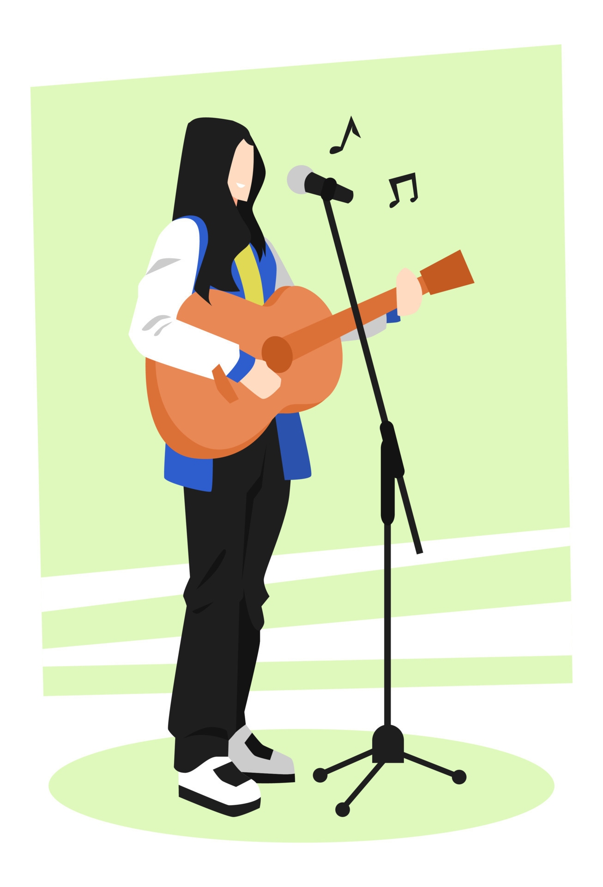
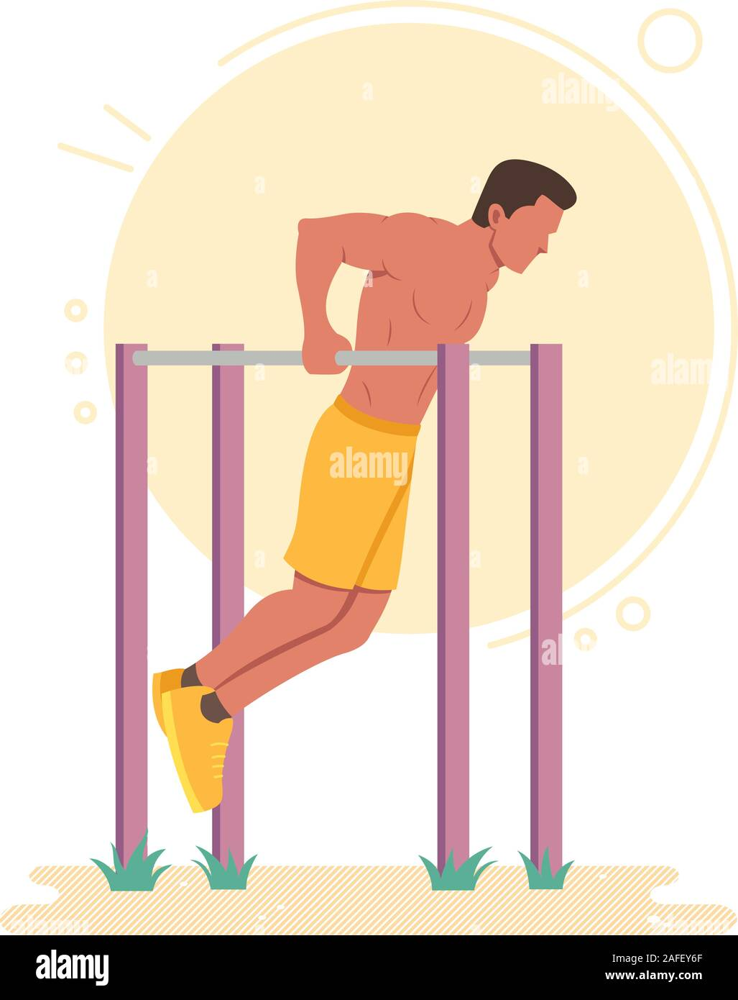
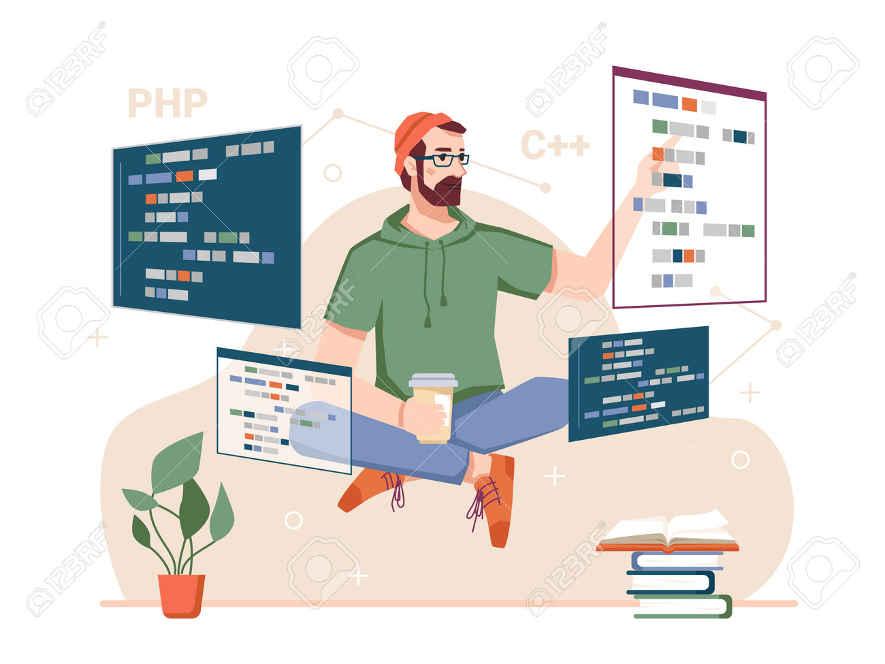
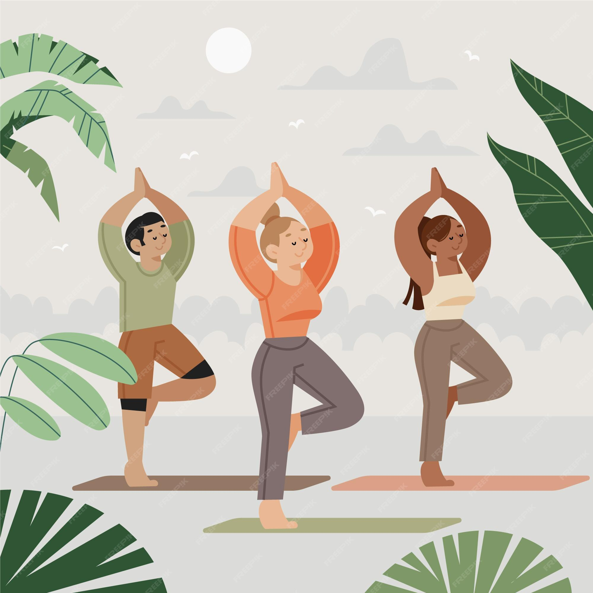
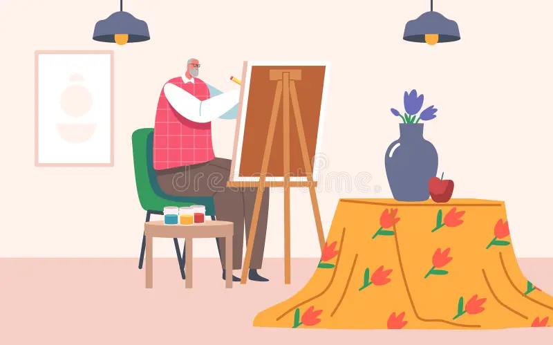

¡Hola, bienvenidos al Rincón de Hobbies y pasiones! 🚀🎨🎮📚
El maravilloso mundo de las pasiones
Este es un espacio dedicado a la maravillosa diversidad de hobbies y pasiones que hacen que la vida sea
vibrante y emocionante. Aquí no hay límites ni etiquetas, solo una exploración apasionada de todo lo que
nos apasiona.
No importa si eres un fanático de los juegos, un entusiasta de la jardinería, un apasionado por la
cocina o un devorador de libros; aquí encontrarás un lugar donde cada hobby y pasión se celebra. ¡Así
que, únete a esta travesía de descubrimiento y disfruta del fascinante mundo de las pasiones y los
hobbies! 🌈🌟

Música: Armonía para el Alma
El arte de crear melodías no solo despierta los sentidos, sino que también alimenta el alma. Ya sea tocando un instrumento o simplemente disfrutando de la música, esta pasión es una vía directa hacia la alegría y la expresión emocional.
Ejercicio: Transforma tu Cuerpo y Mente
El ejercicio no es solo una tarea física; es una aventura que transforma tanto el cuerpo como la mente. Ya sea en el gimnasio, practicando deportes al aire libre o simplemente dando un paseo, la actividad física es clave para un bienestar equilibrado.
Programación: Código para el Desafío Mental
Sumérgete en el fascinante mundo de la programación. Más que una serie de ceros y unos, la programación es una disciplina que desafía la mente y permite la creación de mundos digitales. Descubre el poder de la lógica y la creatividad en este hobby digital.
Yoga: Equilibra Cuerpo y Mente
Sumérgete en el mundo del yoga, donde la conexión entre cuerpo y mente se entrelaza en una danza armoniosa. Más allá de las posturas, el yoga es una invitación a la serenidad y la autoexploración. Descubre cómo esta práctica milenaria no solo fortalece los músculos, sino también el bienestar mental.
Pintura: Colorea tu Mundo
¿Quién dijo que la creatividad solo pertenece a los artistas? La pintura es una forma liberadora de expresión, un lienzo en blanco que espera ser transformado por tus ideas y emociones. Descubre el poder terapéutico de sumergirte en el color y la forma, creando tu propio mundo vibrante y lleno de significado.
Estos son solo algunos ejemplos de los diversos hobbies que pueden enriquecer tu vida y contribuir al bienestar integral. ¡Encuentra el tuyo y deja que la pasión guíe tu camino! 🌟